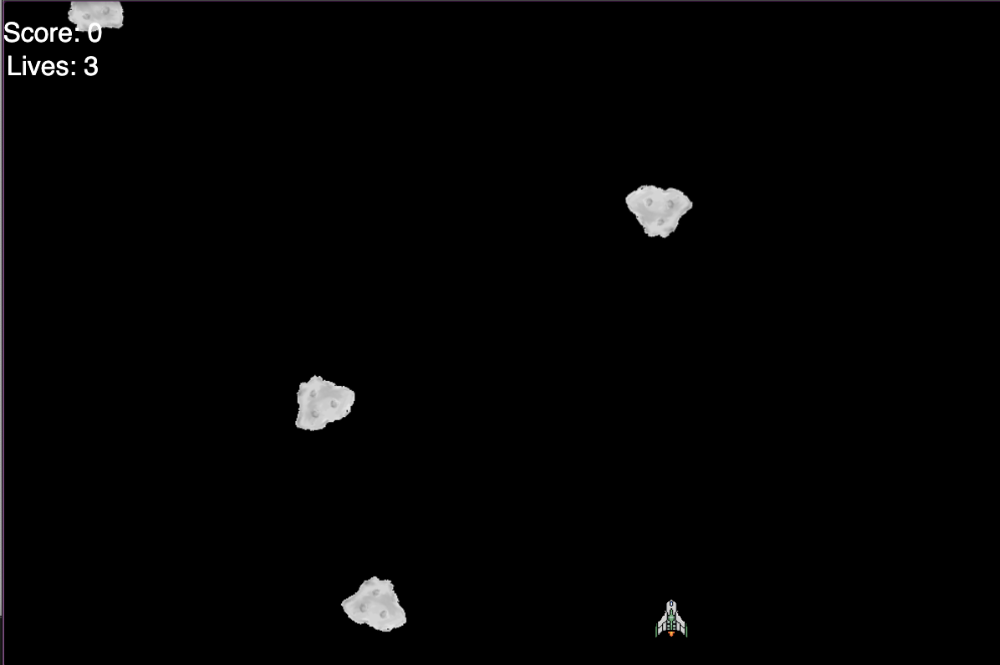
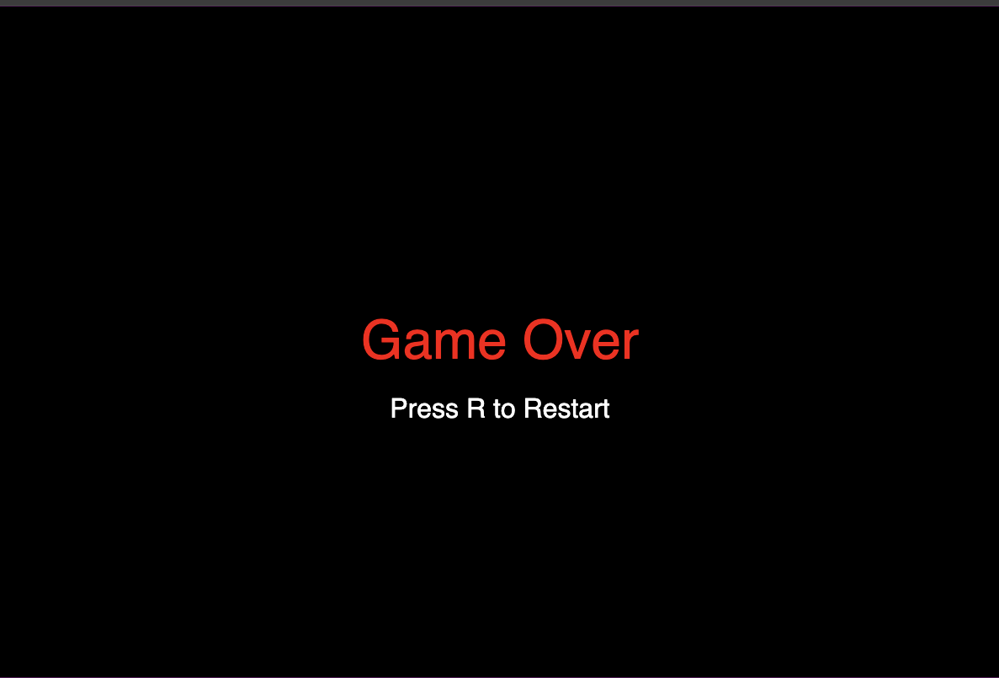

🚀 Arduino-Powered Space Shooter Game
Welcome to the Arduino + p5.js + Tone.js Space Shooter — a browser game where you blast asteroids out of the sky using a real joystick and button. It’s old-school arcade meets DIY hardware!
🎯 What’s This?
This is a fun project that combines:
- 🎮 A joystick and button connected to an Arduino Uno
- 🖱️ A spaceship you control in the browser with smooth movement
- 💥 Asteroids that need destroying
- 🔊 Sound effects and music using Tone.js
- 💡 LED lighting up every time you shoot (pew pew!)
You control the ship with physical movement. It’s like bringing your game controller to life!
🧠 How It Works
- The joystick sends X and Y movement data from the Arduino.
- A button press fires a laser (and lights up the LED).
- p5.js draws everything: spaceship, asteroids, lasers.
- Tone.js handles music and sound effects.
- Enemies spawn and move across the screen — shoot them before they hit you!
📸 Media
Asteroid Sprite Sheet
🪨 2x16 sprite sheet for randomized asteroid animation
Gameplay Screenshots
Here are a couple of action shots from the game:


🧰 Tech Stack
| Tool |
Purpose |
| Arduino |
Sends joystick + button input |
| p5.js |
Renders graphics in browser |
| Tone.js |
Adds sound/music effects |
| Serial |
Communicates Arduino → browser |
| HTML/CSS |
For basic layout and styling |
🛠️ Setup
Hardware
- Arduino Uno R3
- Analog joystick
- Push button
- 220Ω resistor for the LED
- Jumper wires, breadboard
Software
- Flash Arduino with the joystick + button code.
- Open the browser game (index.html) on your computer.
- Make sure your serial port is selected in browser.
- Blast some asteroids!
💡 Future Ideas
- 💾 Save high scores with localStorage
- 🌌 Add more enemy types (like UFOs!)
- 🔥 Particle effects for explosions
- 🧠 Smarter asteroid movement
- 🎨 Animate your ship or add skins
- 👾 Power-ups like shields, bombs, double shots
- 📱 Touchscreen controls for mobile play
🌐 Try It Live
🔗 Live Game: https://blackmooncoder.github.io/CSC-2463-Projects/FinalProject
🎥 Demo Video
Watch the game in action!
📺 YouTube Demo
🧑💻 Built With Love
This project was created for a final systems integration assignment combining hardware, graphics, sound, and user interaction. It’s fun, it’s flashy, and it taught us a lot!
Enjoy the game, and may your shots always be straight!
👨🚀🕹️✨